Primera interaccion
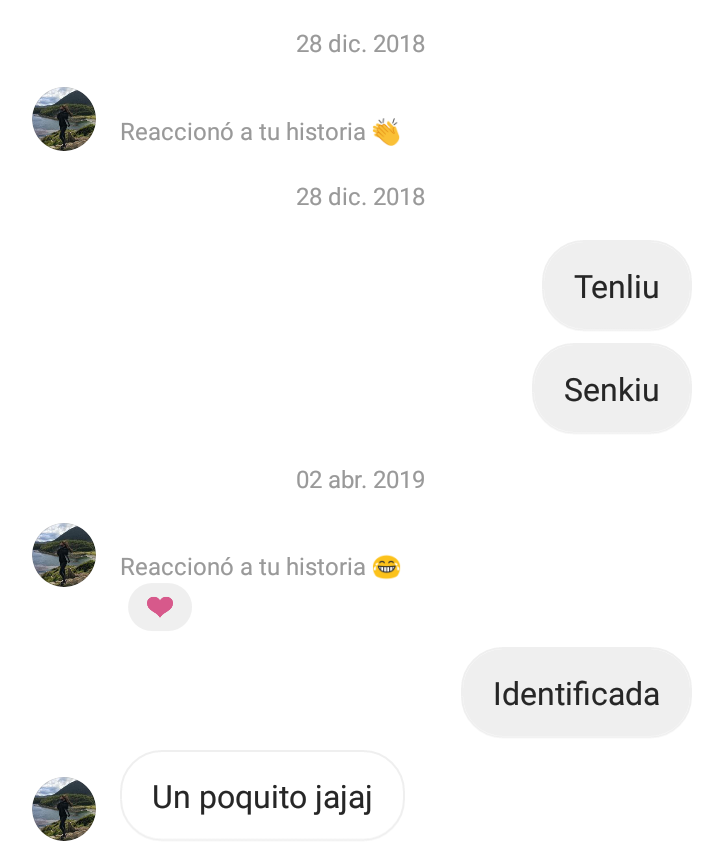Estos momentos, realmente, fue la primera intancia en que te note entre mis conversaciones, mire tu perfil, te encontre linda, pero me era indiferente, claro, no te conocia, si hubiera previsto tu forma de ser quizas desde este punto me hubieras encantado, por que tu personalidad es atrapante, es un viaje sin retorno es una forma placida de ver y sentir la vida, es una utopia contruida en los yaceres de faz de mi mundo.
Comienzo de un viaje sin fin
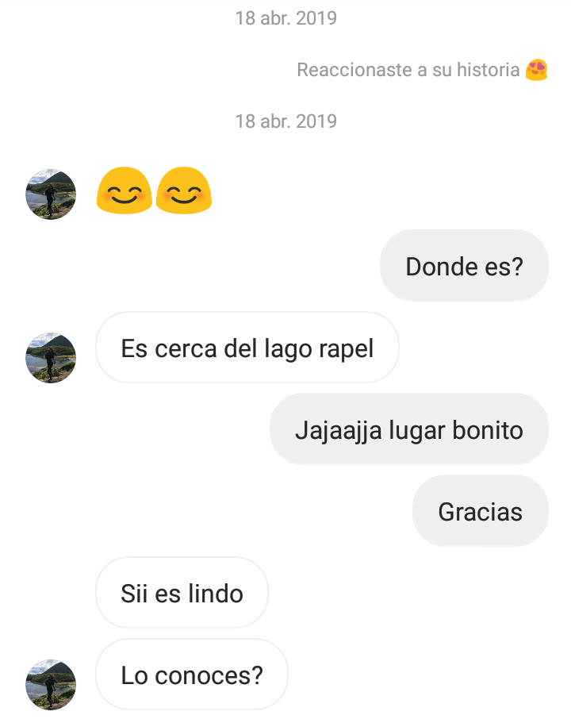Aqui, en este amado punto, fue cuando inicio todo, ya dias anteriores te habia visto en la micro, es una confusion total en mi, verte en la micro, ver esa radiante y fulminante sonrisa, debo decir que me costo admitir que aveces como veia que tomabas la misma micro de regreso aveces hacia la hora o salia apurado del instituto para poder toparte y verte, sabia que te habia visto y yo te buscaba entre mis contacto, no te hayaba, la pena que me causaba que no lograba ver en el paradero y encontrar en instagram era total, que dedique un dia entero a buscarte en instagram :c, hasta que encontre tu chat no sabes lo hermoso que fue y los nervio que me provocaba responderte una historia para iniciar un momento del espacio tiempo, de contacto contigo, creeme que nunca nada fue mas bello que ver que me respondiste y desde ese momento jamas paramos de hablar quien diria que una doncella, tan resonante en su forma de ser, tan fragil como una rosa, con una interminable capacidad de conocimiento, tan sabia y de mirada tierna se fijaria en mi, solo dire que amo que sea asi.
Cuevas del Manzano
Cuevas del Manzano, esta fue una salida que anhelaba hace mucho tiempo de haber comenzado hablar, fue magico, jamas pense conocer a una mujer tan increible como tú, incluso la primera impresion que tuve fue una sonrisa tuya, desde ese momento te juro que me dejaste cautivo, enamorado en tu mirada, no queria despegar mi vista de tu belleza, no paraba de desviar mi mirada a esa sonrisa, tan blanca, pura y contagiosa..., te juro, que no hubo ningun momento en que no buscara la forma de captar de buena forma tu atencion, en todo momento, mi mente nerviosa no paraba de buscar informacion en mi cabeza, solo para darte una platica agradable, entretenida y llena de risas, te digo todo con que estuve 1 mes entero, buscando la mejor forma de pasarlo bien , ibamos subiendo por la montaña, los nervios no paraban, mientras desde metros mas arriba que tú, no te dabas cuenta, pero te miraba, mi mente decia que bella, que simpatica, no entendia porque me hacia tantas preguntas, no entendia porque me sentia tan feliz, cohibido y esperanzador, no queria arruinar la tremenda instancia que tenia para que me conocieras y no te decepcionaras de mi, tenia miedo , pero te conoci y pla pla, con que te digo con que despues de esas instancia, yo dije en mi mente, yo quiero estar con ella, yo realmente quiero estar con ella, me encanta y asi fue como un viaje de 21 dia entre Perú y Ecuador, no hubo dia en que no te pensara y desiara volverte a ver.
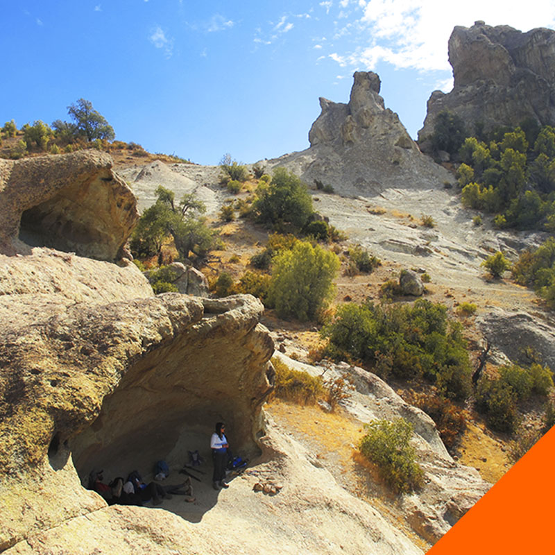PD 1: Esa vez comimo empanada antes y despues del trekking, confirmo fue todo perfecto.
PD 2: En ese entonces no tuvimos fotitos juntos, asi que saque una de internet.
PD 3: Yo jamas sere como esa amiga que te abandono en un momento duro de tu vida, yo estare contigo siempre, en todo momento, jamas olvide eso mi princesa, me lo prometi este mismo dia.
Salida al Bosque de los Brujos
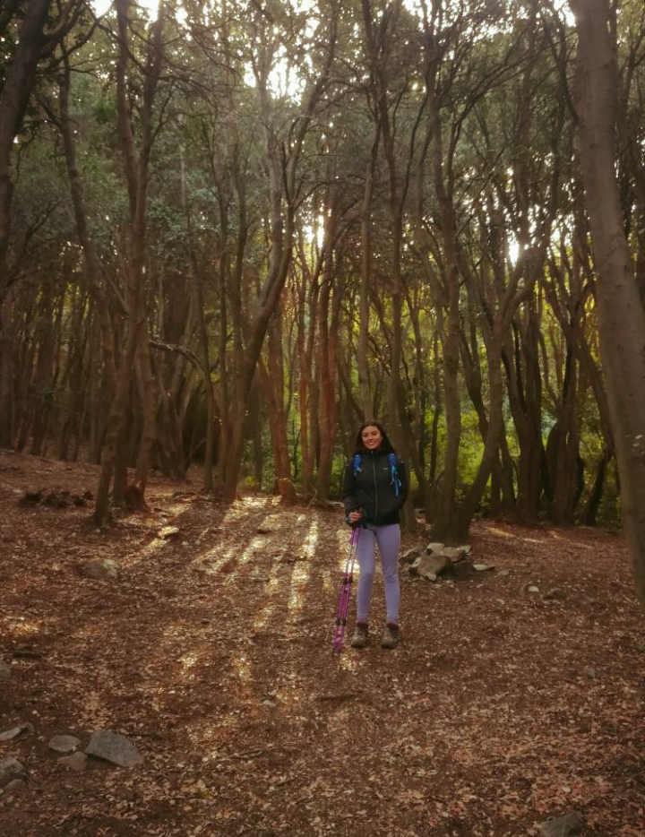Bueno, nuestra segunda gran salida, despues de mi viaje tan anhelado, lamentable no fue contigo. Este fue una travesia corta, pero da risa, nos costo a los dos, pudimos hablar mucho , esa vez fuiste mas abierta, me contaste muchas cosas, que me hicieron ver que ya tenias una gran confianza en mi, al termino de la salida, si te soy honesto, cuando dije que nos sentaramos en esa roca, al lado de la mini cascada, mirando al frente el bosque, arriba las montañas alrededor de las 7:00, casi en punto de atardecer, jamas tuve la intencion mas que de pasar unos ratos mas contigo, jamas estuve cansado, era una excusa para poder compartir mas contigo de forma relajada, cuando nos sentamos y nos mirabamos, sentia algo muy en lo profundo de mi corazon, tenia miedo, no sabia si hacia las cosas bien, te veia sonreir, "me estara diciendo algo o ¿me estoy pasando rollos solos?", te buscaba mirar para juguetear un poco mas, sabia que te daba nervios, pero en cierto momento, me desordenabas tanto mi mente y mis sentimientos que no distinguia nada, creia ver que mirabas mis labios , no sabia si actuar, tenia miedo que despues de eso, si te besaba resultara mal y no me hablaras mas, no sé, un momento en blanco me acerque por inercia, mi mente no pensaba, solo mi corazon me guiaba desperte cuando veia que te acercaste ya comodaste, llego el momento del contacto de nuestro labios, lo senti raro, mi mente hizo boom, hizo una reaccion nuclear total, flotaba entre el abismo, no entendia nada, pero me gustaba, es como cuando llega eso que tanto anhelaste, pero que a su vez sentias que era imposible que llegara, perdido en la confusion, no sabia si era real, si lo pensaba, si estaba vivo, solo sentia mi corazon palpitar a mil por horas, te juro que al abrir mis ojos y verte tan cerca de mi fue un alivia, una paz, una felicidad, que tu mismo viste, mi ansiedad a mil por hora, jamas dude en que llegariamos a algo cuando me diste ese beso, ese beso de alguien que ni en sueño pense que estaria conmigo, ese toque de imposibilidad le dio todo, creeme que contigo haye de que nada es imposible cuando se lucha por ello, tu amor, tu felicidad y sonrisa sera por algo que siempre luchare.
Nuestra Primera vez
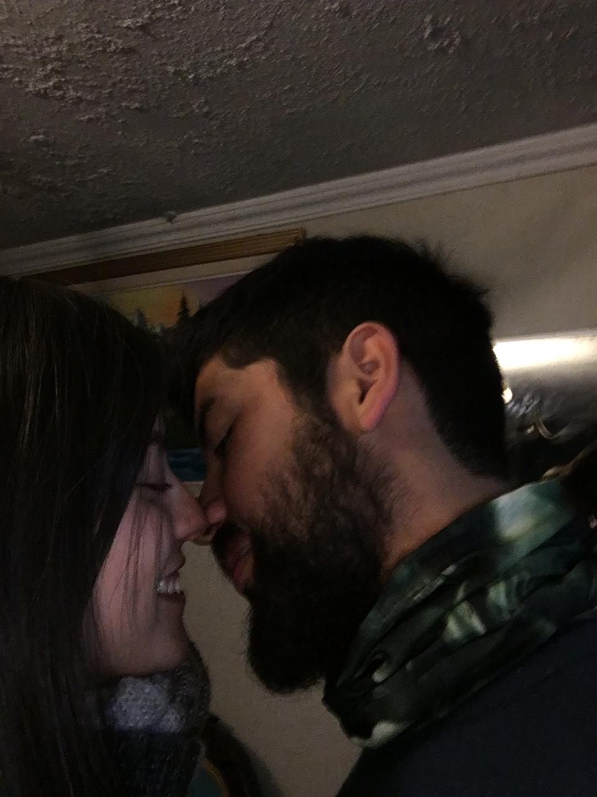Si te dijiera que fue un buen sexo, te mentiria, porque en ninguna forma lo llamaria asi, jamas he tenido sexo contigo, contigo siempre he hecho el amor, esa vez fue magica es inborrable de mi mente, ame mucho esa instancia, hacerlo contigo, conectar nuestros cuerpos , sentir el disfrutar mutuo, ver y conocerte mas haya de lo común que puede ser, nada mejor amor , sin duda sentir el contacto, tu compañia y despues de todo eso terminarlo con un regaloneo dulce totalmente impagable e inolvidable, siempre haces de todos los momentos, algo especial.
Nuestra Segunda vez
Me encanta el video, hay mucha ternura en los dos, amo ese regaloneo que nos damos siempre en cada instancia en la que nos vemos amor mio, mi princesa.
Cerro San Cristobal
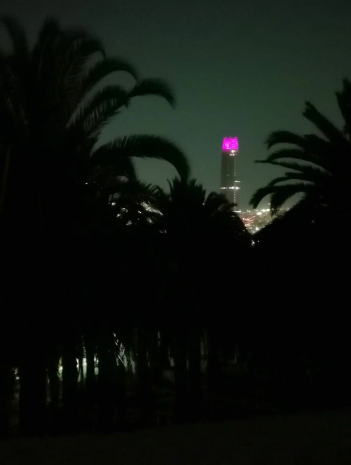Recuerdo que ese dia, yo estaba trabajando, lo cual, nos juntamos despues de que yo terminara, nos juntamos a las 7:30 en metro los leones, tuve que esperarte 30 minutos, debido a que te atrasaste, no me molestaba, mi ansiedad de verte y ganas solo querian tenerte conmigo, fuimos bien tarde al cerro, yo estaba cansado lo subimos de noche, un vehiculo nos subio unos cuantos metros hacia arriba, hablamos harto y como siempre muy bacanes conversaciones como la son siempre contigo, pudimos observar Santiago desde el cerro, magico, juntarte a ti y la montaña dos cosas que amo mucho, pero mas a ti jaja, indudablemente, de ese dia destaco jajajaja, que lo hicimos en el cerro en un lugar sagrado, religioso, me gusto me gusta tu forma tan rebelde y honestinada que eres, como siempre, fue una tremenda salida contigo.
Laguna del Maule
Viaje a la laguna del Maule, en cierto sentido fue nuestro primer y magico viaje juntos en donde tambien tuve la oportunidad de conocerte mas y mas, no sabes el privilegio que fue compartir contigo, atrapado en la serena y armoniosa tonalidad de tu voz, pude saber mas de ti , pude descubri mas de tu mundillo, no solo, tuve la oportunidad de verla dormir entre mis brazos claramente, sé que no fue comodo jajaja dormir medio incomodo, pero tenerte en mis brazos creeme que fue magico como todas las cositas que hemos hecho siempre, eres la narracion de un libro que jamas se desea terminar.
Algo magico que realmente valore, la forma en que te podia robar una sonrisa, escucharla
y verla junto esa tan alba sonrisa, me da por pagado todo, amo verte asi, y espero siempre
verla con esa concavidad positiva y maravillosa.
Algo que supe con inmensidad en mi cabeza es que por esa sonrisa daria mi vida
porque no hay nada mas bello que verte sonreir, conectarme contigo y a la vez,
todo sea tan mutuo.
Bueno, el viaje no podia terminar sin una foto con un beso, como siempre debe ser , tambien recordando el cuchi cuchi en el bus, eso si fue algo extremo jajaja, cumpliendo fantasias nena jajaj, te amo.
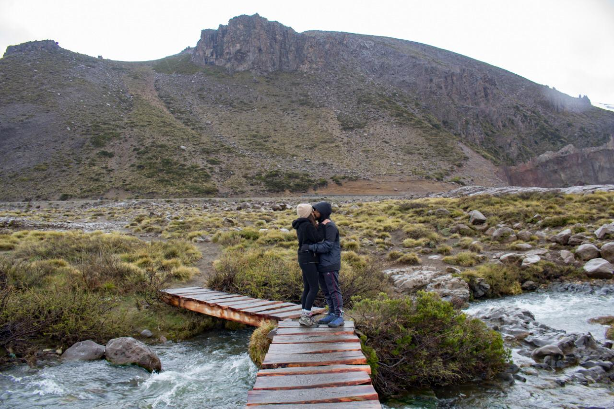Tu Cumpleaños

Como cada 18 de Noviembre, sera un hito en cada año, ¿Por que?, porque ahi, fue la intencia en que esta vida hermosa, te dio a conocerla, donde la creacion mas linda y pura nacio gracias a tus padres, ta linda, creada con tanto amor, delicadesa y serenidad, dio origen a tu divinidad, majestuosa y radiante Catalina , la quien en el 2019 me dio la oportunida de conocerla y enamorarme de ella, costo que ella sintiera algo por mi, lo admito, pero gracias al amor que le tengo, pude hacer que me viera, que le gustara y como dice ahora, se enamorara y eso es algo que jamas dejare pasar en la vida, fuiste, eres y seras lo mas relevante en mi vida y corazon amor mio, ese dia fuimos al cine y vimos "The joke", fue hermoso despues pasamos, por su hamburguesa jajaja siempre regaloneando a nuestro estilo :3, mas que nada celebrando un dia especial, para ti y para mi, ¿Por que para mi?, porque eres especial, porque tu instancia es especial, porque todo de ti es especial, porque tu eres la mejor.
PD : No encontre mas fotos de este dia :c
Primer Camping "El manzano"

Dia magico, primera vez que podia mostrarte lo magico que era acampar al aire libre, reimos, juguetiamos, compartimos, hablamos y tantas cosas que hicieron muy especial ese dia, esas conversaciones nocturnas, sumandole el alcohol y la que fumamos, hizo de la noche perfecta, una conexion total contigo, lo mas lindo?, que te haya gustado acampar y que estas travesia se iria un placer mutuo con ello iniciar un sin fin de aventuras.
Cascada de los Vientos
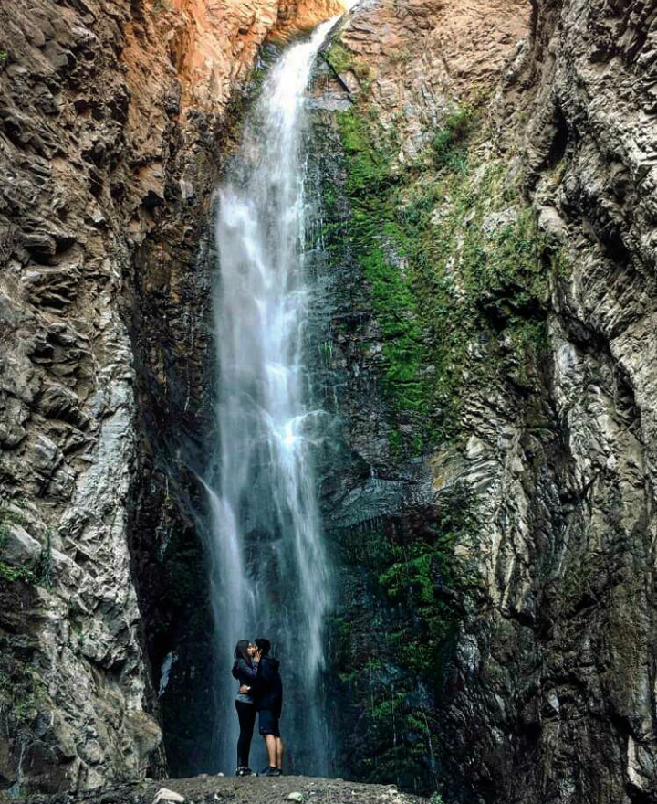inicio viaje Patagonia
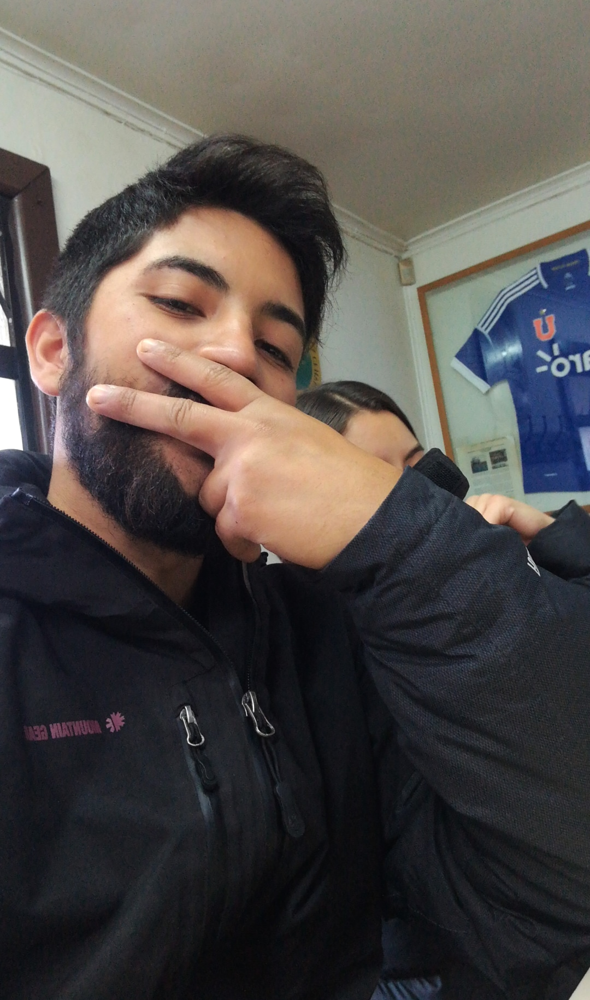Dia de pololeo

Base Torres
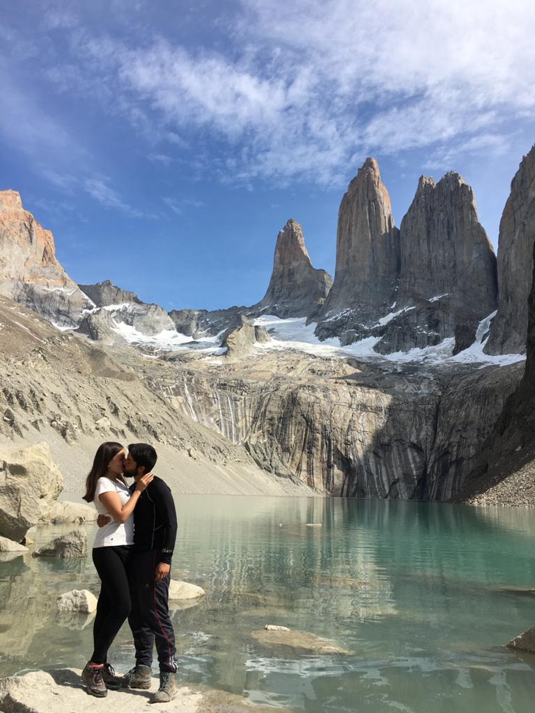Started from University of Pennsylvania. This is an important stage of my career. Here I worked in the local magazine. The experience greatly affected me
Monte Fitz Roy
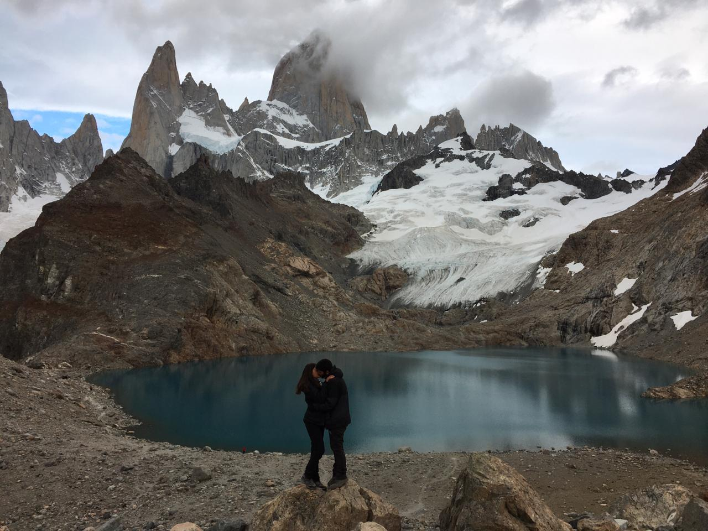Started from University of Pennsylvania. This is an important stage of my career. Here I worked in the local magazine. The experience greatly affected me
Cumpleaños mio
Started from University of Pennsylvania. This is an important stage of my career. Here I worked in the local magazine. The experience greatly affected me
Primer mes de relacion
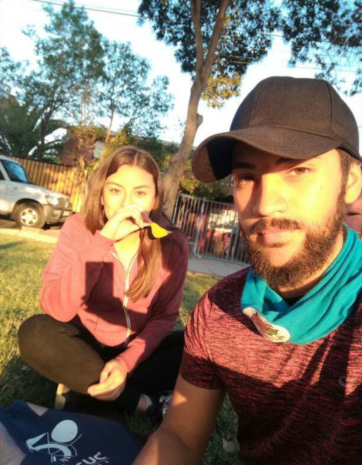Started from University of Pennsylvania. This is an important stage of my career. Here I worked in the local magazine. The experience greatly affected me
Junta especial
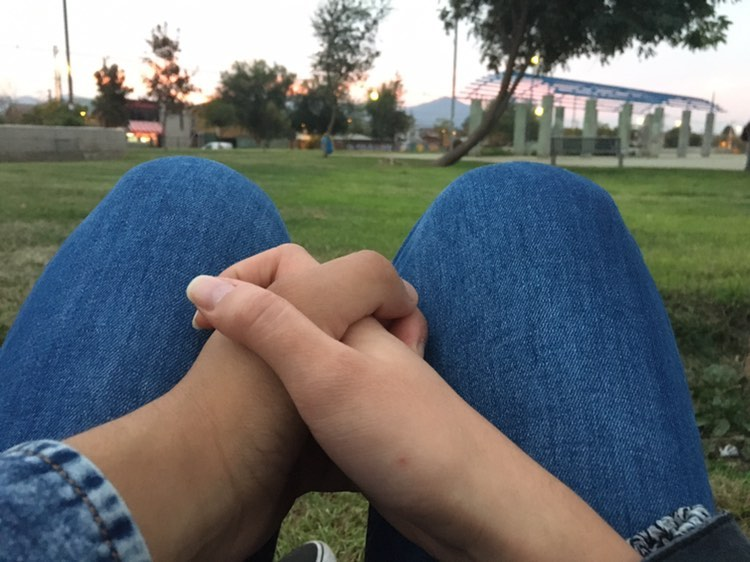Started from University of Pennsylvania. This is an important stage of my career. Here I worked in the local magazine. The experience greatly affected me